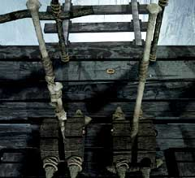

| 概要 | 地図 |
| 淡いヒント集 | ヒント集 | 的確なヒント集 |
| 攻略最短ルート |
| 場所選択に戻る |
ユコール族の村(後半)
 祈祷師の部屋で「ユコール族の仮面」を入手 外へ出る 線路をたどり、外へ出る  機関車の前のフックを引いてみる (動かせない) 機関車の操縦室へ移動し、オスカーに話しかける (「ユコール族」、「機関車」、「ユコール族の仮面」の順で選択肢を選ぶ) 外へ出て、村の入り口にいる2人組に話しかける (「オスカー」、「ヘルプ」の順で選択肢を選ぶ)  機関車に取り付けられたフックを調べ、レバーを引く (ロープがピンと張る)  巻き取り装置のレバーを調べ、右のレバーを引く (機関車が移動する) 機関車の操縦室へ移動し、オスカーに話しかける (「心」を選択する) 祈祷師の家へ移動する オスカーの胸を調べる 時計でいう、「7時」、「3時」の位置のボタンを押す 次に「12時」、「3時」、「6時」、「9時」の位置のボタンを押す 「ボラルバーグの鍵」入手 | 次へ >> | |
| 場所選択に戻る |
| 概要 | 地図 |
| 淡いヒント集 | ヒント集 | 的確なヒント集 |
| 攻略最短ルート |
Syberia II
| 目次へ戻る | ページの上部へ |